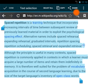
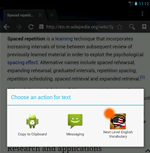
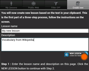
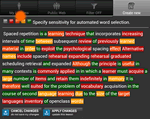
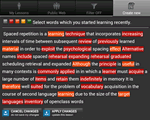
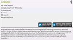

My Lessons - First Use
These pages were primarily designed to create your own content, but you can also browse lessons which other people created and shared with the remainder of the user community. You will learn and prepare lessons the way YOU need it, not how somebody else prepared it. You probably do not want spend time typing and importing vocabulary or you are tired of searching the right vocabulary mix that someone else prepared and shared.
My Lessons is ideal to use when
- you want to review limited number of words and prepare for a test
- you want to learn learn the vocabulary for the next lesson in your coursebook
- you just read a nice article containing some words which you did not know
- you read some online text and you want to remember the new words
My Lessons are used to gain short term knowledge, but they does not replace the long term learning which relies on the “Spaced repetition” process. Check more details in the My Lessons overview.
Try creating your first new lesson now. Here are quick step-by-step instructions.
|  |
Select any English text just like you would do when you want to copy it to Clipboard.
Hit the Share button from default Google menu. |
|  |
In the "Choose an action for text" window, select Next Level English Vocabulary. |
|  |
The app will bring you directly to the import screen. Enter the Lesson name and optionally also the Lesson description. |
 |
Click the button.
You can add more words in case you need to. |
|  |
Change the selection filter and tap the orange icon.
You can tap different icon colors as needed. |
|  |
Now only new and difficult words are selected.
Tap on individual words to include or exlude them from your lesson.
Click Apply Changes. |
|  |
You first lessons is now completed!
Download it and start learning some new words :-) |